Totality for clients
First time setup
The terms, the five setup questions, your nutrition targets and Tali's quick tour, all done once.
The first time you log in, Totality asks you to do four short things. It takes about five minutes. You only do this once.
- Agree to the terms.
- Answer five setup questions (units, goal, experience, body stats, training preferences).
- Set your nutrition targets, or skip it.
- Take Tali's tour of the Home screen, or skip it.
1. Agree to the terms#
A Terms & Conditions screen lists the main points. Read them, tick the box that says I have read and agree to the Terms & Conditions, then tap Accept & Continue. You can read the full terms with Read the full Terms & Conditions.
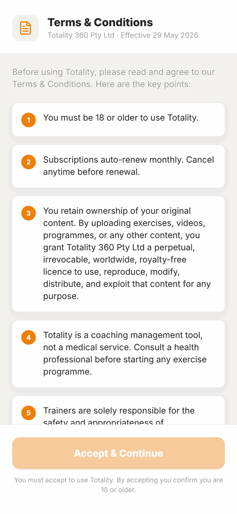
You must be 18 or older to use Totality.
2. The setup questions#
There are five steps. A bar at the top shows Step 1 of 5 and so on. You can tap Back to change an answer. You can't leave these screens until you finish, because your trainer needs the answers.
Step 1: your units#
Totality guesses your country and shows units to match, like kg, cm and kcal in Australia.
- Check the card that says Looks like you're in .... If the country is wrong, tap Not right? Pick your country.
- Change any unit you like: Body weight (kg, lb or st lb), Height (cm or ft in) and Energy (kcal or kJ).
- Tap More units for water, lifting weights, distance, the day your week starts on, and 12 or 24 hour time.
- Tap Looks right, next.
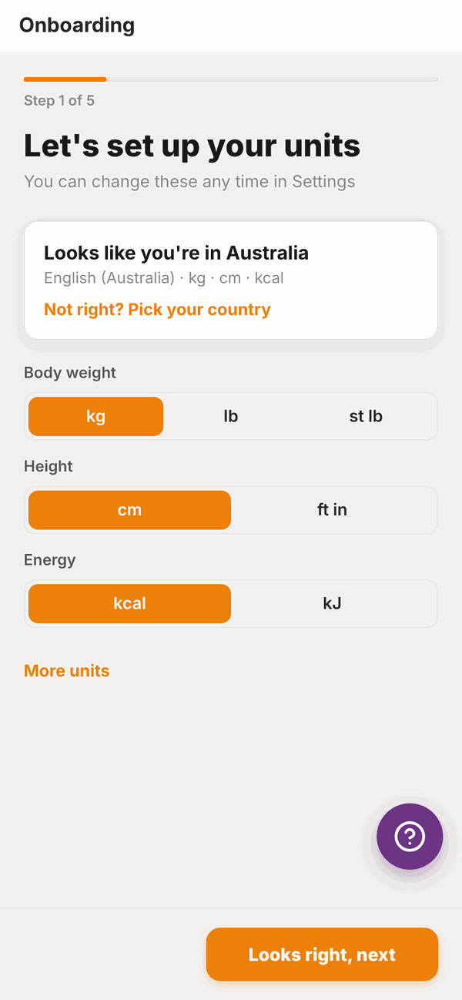
You can change units any time later. See Settings.
Step 2: your main goal#
Tap one: Lose Weight, Build Muscle, Improve Fitness, Increase Strength or General Health. Then tap Next.
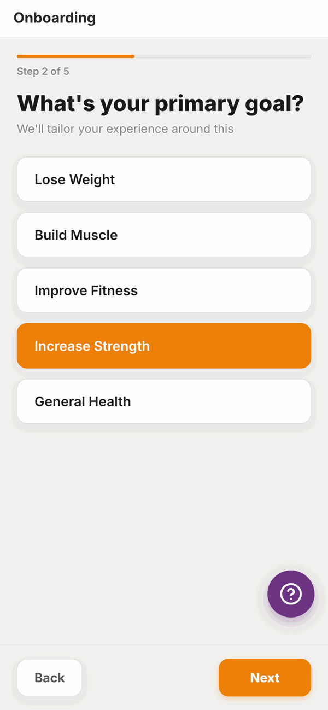
Step 3: your experience#
Tap how long you've been training: Beginner (less than 1 year), Intermediate (1-3 years) or Advanced (3+ years). Then tap the number of days a week you train, from 1 to 7. Tap Next.
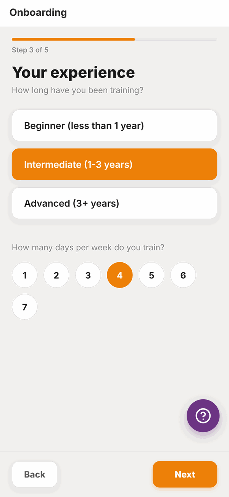
Step 4: body stats#
- Type your Current weight and Goal weight.
- Type your Height.
- Tap Date of birth and pick your birthday.
- Answer Are you currently pregnant or breastfeeding? Tap No, the trimester you are in, or Breastfeeding. This helps your trainer set your nutrition safely.
- Tap Next.
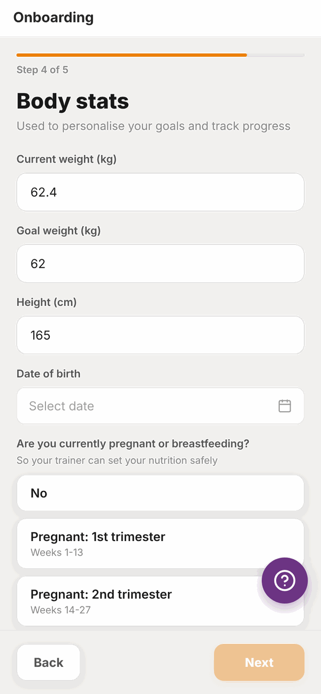
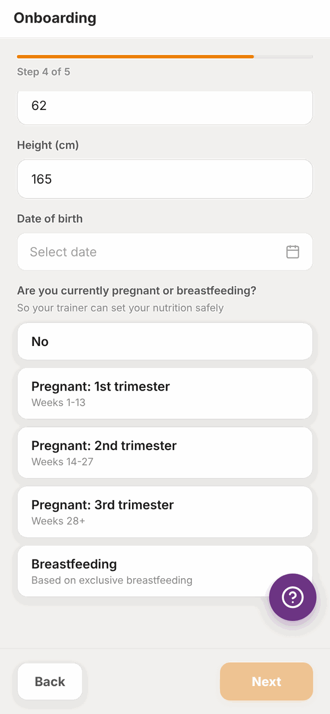
The Next button stays pale until every box on this step is filled in.
Step 5: training preferences#
- Under Any injuries or physical limitations? type anything your trainer should know, like a sore knee. Leave it blank if there's nothing.
- Under Preferred training style, tap one: Heavy compound lifts, Machine-based, Bodyweight only or Mixed / whatever works.
- Tap Complete.
Your trainer can see all of these answers.
3. Nutrition targets (optional)#
If your trainer hasn't set your daily food targets yet, Totality shows a Nutrition Targets screen that says One last optional step.
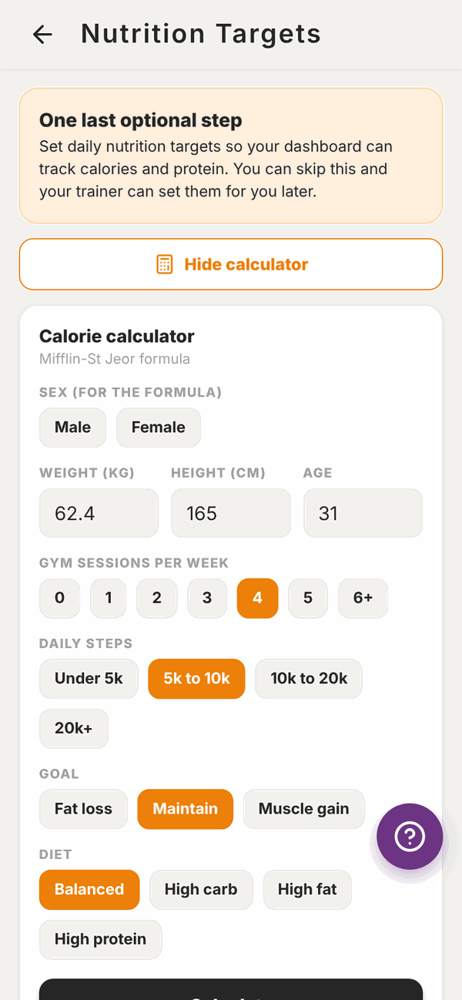
You have three choices:
- Tap Skip for now. Your trainer can set your targets later.
- Use the calculator to work them out. Pick your details and tap Calculate, then Save targets.
- Type your own numbers into Your daily targets and tap Save targets.
If your trainer has already set your targets, you'll see them marked Set by your trainer and a Continue button instead. See Nutrition targets for the full detail.
4. Tali's tour#
On your Home screen, Tali pops up to show you around. There are 8 short cards. Tap Next to move on, Back to go back, or Skip tour at the top to close it.
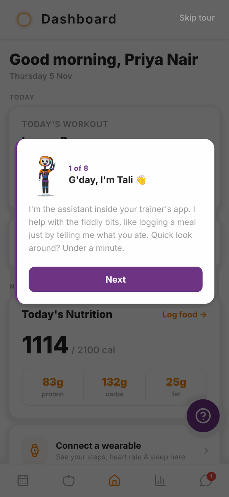
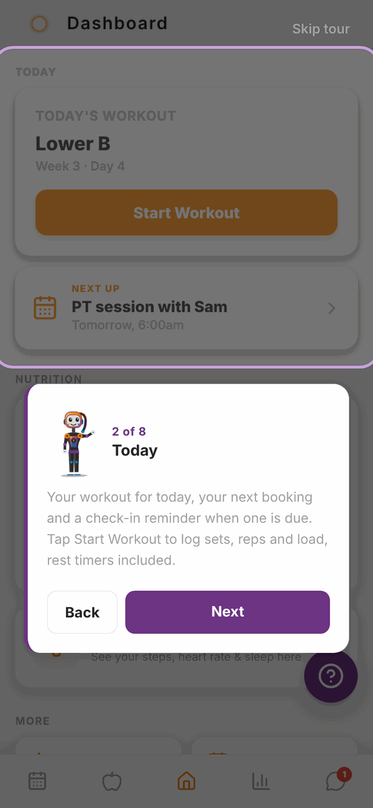
At the end you'll see Welcome aboard! with three tips. Tap Let's get started.
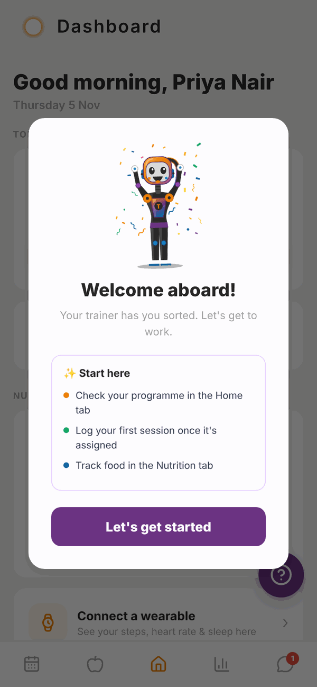
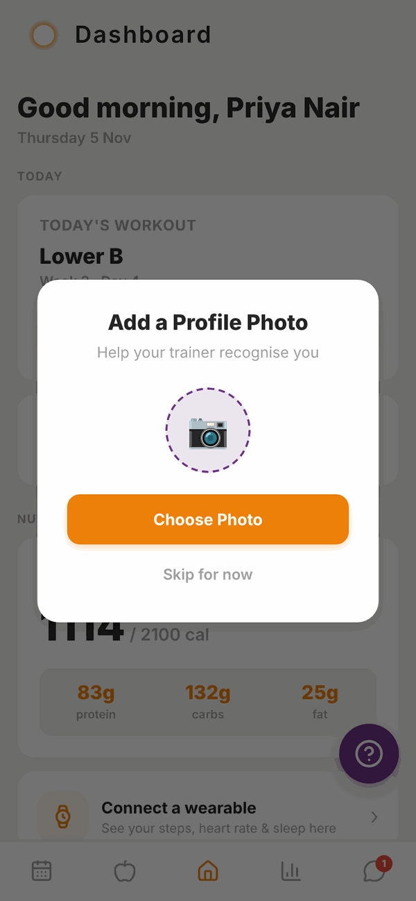
Last, Totality asks you to Add a Profile Photo so your trainer can recognise you. Tap Choose Photo, pick a photo, then Save Photo. Or tap Skip for now. You can add or change it later in Settings.
Questions#
Can I skip the setup questions?
No. Your trainer uses your answers to plan your training and nutrition, so the five steps must be finished before you reach Home. Nutrition targets and the tour can be skipped.
I made a mistake in my answers. Can I change them?
Tap Back while you're still in the steps. After you finish, message your trainer with the right details. You can change your units any time in Settings.
Why does it ask if I'm pregnant or breastfeeding?
So your trainer can set your nutrition safely. If you're pregnant or breastfeeding, Totality treats your calorie target as a minimum to reach, not a limit, and the calculator won't offer a fat loss goal.
Can I see the tour again?
The tour shows once. Everything it covers is on Your Home screen.
Do I have to add a profile photo?
No. Tap Skip for now. It just helps your trainer recognise you.
It asked me to accept the terms again.
That happens if the terms changed or your acceptance wasn't saved. Tick the box and tap Accept & Continue.